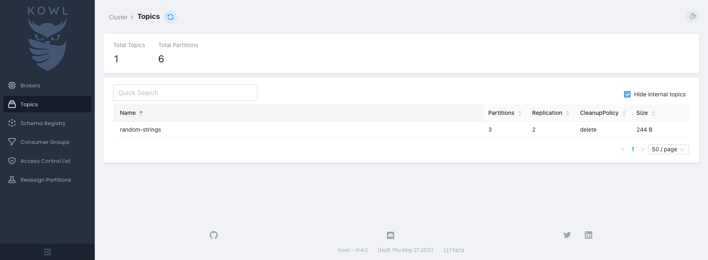
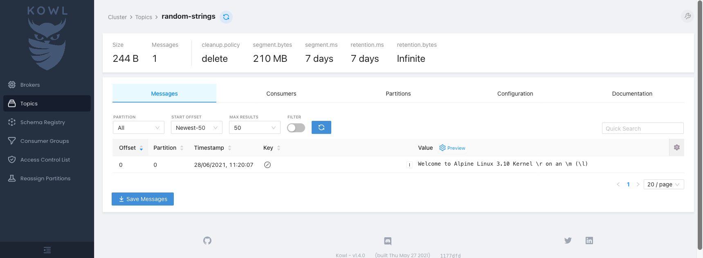

Kafka
Aiven for Apache Kafka is an excellent option if you need to run Apache Kafka at scale. With Aiven Kubernetes Operator you can get up and running with a suitably sized Apache Kafka service in a few minutes.
Prerequisites¶
- A Kubernetes cluster with Aiven Kubernetes Operator installed using helm or kubectl.
- A Kubernetes Secret with an Aiven authentication token.
Create a Kafka instance¶
1. Create a file named kafka-sample.yaml, and add the following content:
apiVersion: aiven.io/v1alpha1
kind: Kafka
metadata:
name: kafka-sample
spec:
# gets the authentication token from the `aiven-token` Secret
authSecretRef:
name: aiven-token
key: token
# outputs the Kafka connection on the `kafka-connection` Secret
connInfoSecretTarget:
name: kafka-auth
# add your Project name here
project: PROJECT_NAME
# cloud provider and plan of your choice
# you can check all of the possibilities here https://aiven.io/pricing
cloudName: google-europe-west1
plan: startup-4
# general Aiven configuration
maintenanceWindowDow: friday
maintenanceWindowTime: 23:00:00
# specific Kafka configuration
userConfig:
kafka_version: "2.7"
2. Create the following resource on Kubernetes:
3. Inspect the service created using the command below.
The output has the project name and state, similar to the following:
After a couple of minutes, the STATE field is changed to RUNNING, and is ready to be used.
Use the connection Secret¶
For your convenience, the operator automatically stores the Kafka connection information in a Secret created with the
name specified on the connInfoSecretTarget field.
The output is similar to the following:
Name: kafka-auth
Namespace: default
Annotations: <none>
Type: Opaque
Data
====
CA_CERT: 1537 bytes
HOST: 41 bytes
PASSWORD: 16 bytes
PORT: 5 bytes
USERNAME: 8 bytes
ACCESS_CERT: 1533 bytes
ACCESS_KEY: 2484 bytes
You can use the jq to quickly decode the Secret:
The output is similar to the following:
{
"CA_CERT": "<secret-ca-cert>",
"ACCESS_CERT": "<secret-cert>",
"ACCESS_KEY": "<secret-access-key>",
"HOST": "kafka-sample-your-project.aivencloud.com",
"PASSWORD": "<secret-password>",
"PORT": "13041",
"USERNAME": "avnadmin"
}
Test the connection¶
You can verify your access to the Kafka cluster from a Pod using the authentication data from the kafka-auth Secret. kcat is used for our examples below.
1. Create a file named kafka-test-connection.yaml, and add the following content:
apiVersion: v1
kind: Pod
metadata:
name: kafka-test-connection
spec:
restartPolicy: Never
containers:
- image: edenhill/kcat:1.7.0
name: kcat
# the command below will connect to the Kafka cluster
# and output its metadata
command:
[
"kcat",
"-b",
"$(HOST):$(PORT)",
"-X",
"security.protocol=SSL",
"-X",
"ssl.key.location=/kafka-auth/ACCESS_KEY",
"-X",
"ssl.key.password=$(PASSWORD)",
"-X",
"ssl.certificate.location=/kafka-auth/ACCESS_CERT",
"-X",
"ssl.ca.location=/kafka-auth/CA_CERT",
"-L",
]
# loading the data from the Secret as environment variables
# useful to access the Kafka information, like hostname and port
envFrom:
- secretRef:
name: kafka-auth
volumeMounts:
- name: kafka-auth
mountPath: "/kafka-auth"
# loading the data from the Secret as files in a volume
# useful to access the Kafka certificates
volumes:
- name: kafka-auth
secret:
secretName: kafka-auth
2. Apply the file.
Once successfully applied, you have a log with the metadata information about the Kafka cluster.
The output is similar to the following:
Metadata for all topics (from broker -1: ssl://kafka-sample-your-project.aivencloud.com:13041/bootstrap):
3 brokers:
broker 2 at 35.205.234.70:13041
broker 3 at 34.77.127.70:13041 (controller)
broker 1 at 34.78.146.156:13041
0 topics:
Create a KafkaTopic and KafkaACL¶
To properly produce and consume content on Kafka, you need topics and ACLs. The operator supports both with
the KafkaTopic and KafkaACL resources.
Below, here is how to create a Kafka topic named random-strings where random string messages will be sent.
1. Create a file named kafka-topic-random-strings.yaml with the content below:
apiVersion: aiven.io/v1alpha1
kind: KafkaTopic
metadata:
name: random-strings
spec:
authSecretRef:
name: aiven-token
key: token
project: PROJECT_NAME
serviceName: kafka-sample
# here we can specify how many partitions the topic should have
partitions: 3
# and the topic replication factor
replication: 2
# we also support various topic-specific configurations
config:
flush_ms: 100
2. Create the resource on Kubernetes:
3. Create a user and an ACL. To use the Kafka topic, create a new user with the ServiceUser resource (in order to
avoid using the avnadmin superuser), and the KafkaACL to allow the user access to the topic.
In a file named kafka-acl-user-crab.yaml, add the following two resources:
apiVersion: aiven.io/v1alpha1
kind: ServiceUser
metadata:
# the name of our user 🦀
name: crab
spec:
authSecretRef:
name: aiven-token
key: token
# the Secret name we will store the users' connection information
# looks exactly the same as the Secret generated when creating the Kafka cluster
# we will use this Secret to produce and consume events later!
connInfoSecretTarget:
name: kafka-crab-connection
# the Aiven project the user is related to
project: PROJECT_NAME
# the name of our Kafka Service
serviceName: kafka-sample
---
apiVersion: aiven.io/v1alpha1
kind: KafkaACL
metadata:
name: crab
spec:
authSecretRef:
name: aiven-token
key: token
project: PROJECT_NAME
serviceName: kafka-sample
# the username from the ServiceUser above
username: crab
# the ACL allows to produce and consume on the topic
permission: readwrite
# specify the topic we created before
topic: random-strings
To create the crab user and its permissions, execute the following command:
Produce and consume events¶
Using the previously created KafkaTopic, ServiceUser, KafkaACL, you can produce and consume events.
You can use kcat to produce a message into Kafka, and the -t random-strings argument to select the desired topic,
and use the content of the /etc/issue file as the message's body.
1. Create a kafka-crab-produce.yaml file with the content below:
apiVersion: v1
kind: Pod
metadata:
name: kafka-crab-produce
spec:
restartPolicy: Never
containers:
- image: edenhill/kcat:1.7.0
name: kcat
# the command below will produce a message with the /etc/issue file content
command:
[
"kcat",
"-b",
"$(HOST):$(PORT)",
"-X",
"security.protocol=SSL",
"-X",
"ssl.key.location=/crab-auth/ACCESS_KEY",
"-X",
"ssl.key.password=$(PASSWORD)",
"-X",
"ssl.certificate.location=/crab-auth/ACCESS_CERT",
"-X",
"ssl.ca.location=/crab-auth/CA_CERT",
"-P",
"-t",
"random-strings",
"/etc/issue",
]
# loading the crab user data from the Secret as environment variables
# useful to access the Kafka information, like hostname and port
envFrom:
- secretRef:
name: kafka-crab-connection
volumeMounts:
- name: crab-auth
mountPath: "/crab-auth"
# loading the crab user information from the Secret as files in a volume
# useful to access the Kafka certificates
volumes:
- name: crab-auth
secret:
secretName: kafka-crab-connection
2. Create the Pod with the following content:
Now your event is stored in Kafka.
To consume a message, you can use a graphical interface called Kowl. It allows you to explore information about our Kafka cluster, such as brokers, topics, or consumer groups.
1. Create a Kubernetes Pod and service to deploy and access Kowl. Create a file named kafka-crab-consume.yaml with the
content below:
apiVersion: v1
kind: Pod
metadata:
name: kafka-crab-consume
labels:
app: kafka-crab-consume
spec:
containers:
- image: quay.io/cloudhut/kowl:v1.4.0
name: kowl
# kowl configuration values
env:
- name: KAFKA_TLS_ENABLED
value: "true"
- name: KAFKA_BROKERS
value: $(HOST):$(PORT)
- name: KAFKA_TLS_PASSPHRASE
value: $(PASSWORD)
- name: KAFKA_TLS_CAFILEPATH
value: /crab-auth/CA_CERT
- name: KAFKA_TLS_CERTFILEPATH
value: /crab-auth/ACCESS_CERT
- name: KAFKA_TLS_KEYFILEPATH
value: /crab-auth/ACCESS_KEY
# inject all connection information as environment variables
envFrom:
- secretRef:
name: kafka-crab-connection
volumeMounts:
- name: crab-auth
mountPath: /crab-auth
# loading the crab user information from the Secret as files in a volume
# useful to access the Kafka certificates
volumes:
- name: crab-auth
secret:
secretName: kafka-crab-connection
---
# we will be using a simple service to access Kowl on port 8080
apiVersion: v1
kind: Service
metadata:
name: kafka-crab-consume
spec:
selector:
app: kafka-crab-consume
ports:
- port: 8080
targetPort: 8080
2. Create the resources with:
3. In another terminal create a port-forward tunnel to your Pod:
4. In the browser of your choice, access the http://localhost:8080 address. You now see a page with
the random-strings topic listed:

5. Click the topic name to see the message. 
You have now consumed the message.